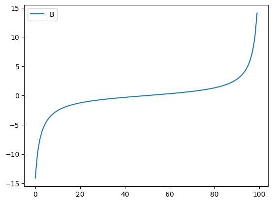
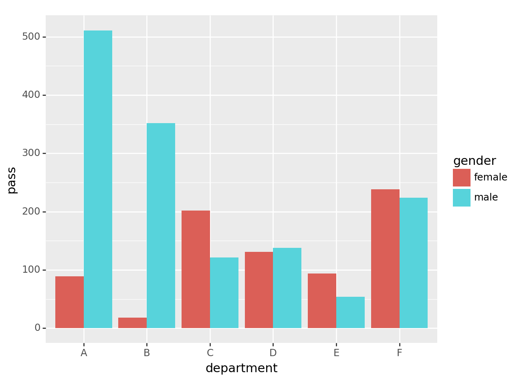
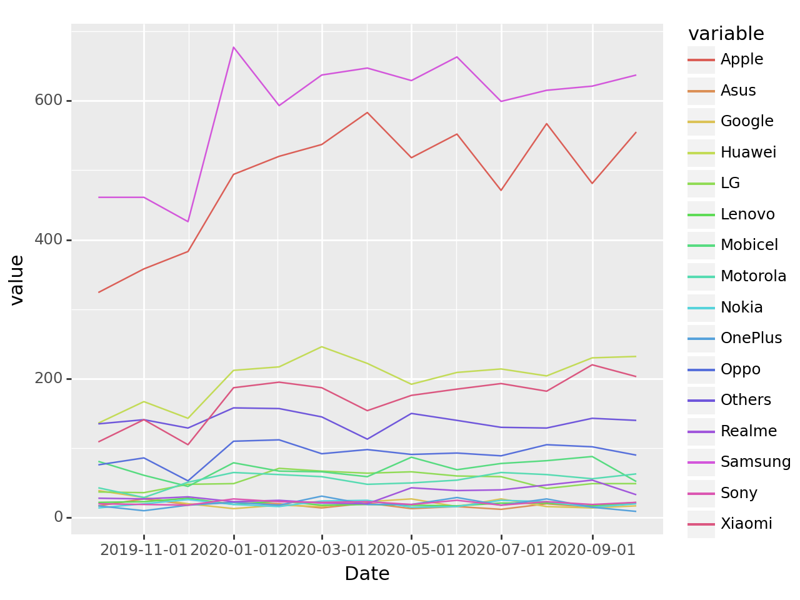

import numpy as np
import pandas as pd
from plotnine import *07wk-1: Pandas – lambda df:의 활용, MultiIndex의 이해, tidydata의 이해, melt/stack
pandas

1. 강의영상
2. Imports
3. Pandas – lambda df:의 활용
A. lambda df: with indexer
- ref: https://pandas.pydata.org/docs/user_guide/indexing.html#indexing-callable
예시1 : 표현1,2,3은 같은 문법이다.
df = pd.DataFrame({'A':[-1,np.nan,1,1],'B':[2,3,np.nan,4],'C':[np.nan,4,5,6]})
df| A | B | C | |
|---|---|---|---|
| 0 | -1.0 | 2.0 | NaN |
| 1 | NaN | 3.0 | 4.0 |
| 2 | 1.0 | NaN | 5.0 |
| 3 | 1.0 | 4.0 | 6.0 |
(표현1)
df[df.A.isna()]| A | B | C | |
|---|---|---|---|
| 1 | NaN | 3.0 | 4.0 |
(표현2)
df[(lambda _df: _df.A.isna())(df)]| A | B | C | |
|---|---|---|---|
| 1 | NaN | 3.0 | 4.0 |
(표현3)
df[lambda _df: _df.A.isna()] | A | B | C | |
|---|---|---|---|
| 1 | NaN | 3.0 | 4.0 |
#
예시2: 예시1의 (표현3)은 .loc, .iloc 에서도 가능함
df = pd.DataFrame({'A':[-1,np.nan,1,1],'B':[2,3,np.nan,4],'C':[np.nan,4,5,6]})
df| A | B | C | |
|---|---|---|---|
| 0 | -1.0 | 2.0 | NaN |
| 1 | NaN | 3.0 | 4.0 |
| 2 | 1.0 | NaN | 5.0 |
| 3 | 1.0 | 4.0 | 6.0 |
df.loc[lambda _df: _df.A.isna(), :]| A | B | C | |
|---|---|---|---|
| 1 | NaN | 3.0 | 4.0 |
df.iloc[lambda _df: list(_df.A.isna()), :]| A | B | C | |
|---|---|---|---|
| 1 | NaN | 3.0 | 4.0 |
- iloc은 True, False 형태로 이루어진 pd.Series가 들어올 경우 인덱싱이 불가능하므로 리스트로 바꿔줘야했었음..
#
예시3: 왜 이런 문법이 있을까? 연속적으로 dataFrame을 변화시킬 경우 유리한 테크닉
df = pd.DataFrame({'A':[-1,np.nan,1,1],'B':[2,3,np.nan,4],'C':[np.nan,4,5,6]})
df| A | B | C | |
|---|---|---|---|
| 0 | -1.0 | 2.0 | NaN |
| 1 | NaN | 3.0 | 4.0 |
| 2 | 1.0 | NaN | 5.0 |
| 3 | 1.0 | 4.0 | 6.0 |
step1: D=A+B+C를 계산
df.assign(D=df.A+df.B+df.C)| A | B | C | D | |
|---|---|---|---|---|
| 0 | -1.0 | 2.0 | NaN | NaN |
| 1 | NaN | 3.0 | 4.0 | NaN |
| 2 | 1.0 | NaN | 5.0 | NaN |
| 3 | 1.0 | 4.0 | 6.0 | 11.0 |
step2: 여기에서 결측치의 값이 50%가 넘는 열만 고르고 싶다면?
df.assign(D=df.A+df.B+df.C).loc[:,lambda _df: _df.isna().mean()>0.5]| D | |
|---|---|
| 0 | NaN |
| 1 | NaN |
| 2 | NaN |
| 3 | 11.0 |
#
B. lambda df: with assign
예시1
df = pd.DataFrame({'A':[-1,np.nan,1,1],'B':[2,3,np.nan,4],'C':[np.nan,4,5,6]})
df| A | B | C | |
|---|---|---|---|
| 0 | -1.0 | 2.0 | NaN |
| 1 | NaN | 3.0 | 4.0 |
| 2 | 1.0 | NaN | 5.0 |
| 3 | 1.0 | 4.0 | 6.0 |
step1: D=A+B+C
df.eval('D=A+B+C')| A | B | C | D | |
|---|---|---|---|---|
| 0 | -1.0 | 2.0 | NaN | NaN |
| 1 | NaN | 3.0 | 4.0 | NaN |
| 2 | 1.0 | NaN | 5.0 | NaN |
| 3 | 1.0 | 4.0 | 6.0 | 11.0 |
step2: 여기에서 결측치의 값을 row-wise하게 count하여 새로운열 E에 할당하고 싶다면?
df.eval('D=A+B+C').assign(E = lambda _df: _df.isna().sum(axis=1))| A | B | C | D | E | |
|---|---|---|---|---|---|
| 0 | -1.0 | 2.0 | NaN | NaN | 2 |
| 1 | NaN | 3.0 | 4.0 | NaN | 2 |
| 2 | 1.0 | NaN | 5.0 | NaN | 2 |
| 3 | 1.0 | 4.0 | 6.0 | 11.0 | 0 |
#
예시2 – 원본데이터를 손상시키지 않으며 데이터를 변형하고 싶을때..
np.random.seed(43052)
df = pd.DataFrame({'A':[12,234,3456,12345,654222]})
df| A | |
|---|---|
| 0 | 12 |
| 1 | 234 |
| 2 | 3456 |
| 3 | 12345 |
| 4 | 654222 |
(풀이1) – 복사본생성 (실패)
step1: 복사본생성 (?)
df2 = df df2| A | |
|---|---|
| 0 | 12 |
| 1 | 234 |
| 2 | 3456 |
| 3 | 12345 |
| 4 | 654222 |
step2: B=log(A), C=(B-B.mean())/B.std()
df2['B'] = np.log(df2['A'])df2| A | B | |
|---|---|---|
| 0 | 12 | 2.484907 |
| 1 | 234 | 5.455321 |
| 2 | 3456 | 8.147867 |
| 3 | 12345 | 9.421006 |
| 4 | 654222 | 13.391202 |
df2['C']=(df2['B']-df2['B'].mean())/df2['B'].std()
df2| A | B | C | |
|---|---|---|---|
| 0 | 12 | 2.484907 | -1.286574 |
| 1 | 234 | 5.455321 | -0.564847 |
| 2 | 3456 | 8.147867 | 0.089367 |
| 3 | 12345 | 9.421006 | 0.398704 |
| 4 | 654222 | 13.391202 | 1.363350 |
df # 이게 왜 여기서 나오지?| A | B | C | |
|---|---|---|---|
| 0 | 12 | 2.484907 | -1.286574 |
| 1 | 234 | 5.455321 | -0.564847 |
| 2 | 3456 | 8.147867 | 0.089367 |
| 3 | 12345 | 9.421006 | 0.398704 |
| 4 | 654222 | 13.391202 | 1.363350 |
(풀이2) – 복사본생성 (성공)
np.random.seed(43052)
df = pd.DataFrame({'A':[12,234,3456,12345,654222]})
df| A | |
|---|---|
| 0 | 12 |
| 1 | 234 |
| 2 | 3456 |
| 3 | 12345 |
| 4 | 654222 |
step1: 복사본생성
df2 = df.copy()df2| A | |
|---|---|
| 0 | 12 |
| 1 | 234 |
| 2 | 3456 |
| 3 | 12345 |
| 4 | 654222 |
step2: B=log(A), C=(B-B.mean())/B.std()
df2['B'] = np.log(df2['A'])df2| A | B | |
|---|---|---|
| 0 | 12 | 2.484907 |
| 1 | 234 | 5.455321 |
| 2 | 3456 | 8.147867 |
| 3 | 12345 | 9.421006 |
| 4 | 654222 | 13.391202 |
df2['C']=(df2['B']-df2['B'].mean())/df2['B'].std()
df2| A | B | C | |
|---|---|---|---|
| 0 | 12 | 2.484907 | -1.286574 |
| 1 | 234 | 5.455321 | -0.564847 |
| 2 | 3456 | 8.147867 | 0.089367 |
| 3 | 12345 | 9.421006 | 0.398704 |
| 4 | 654222 | 13.391202 | 1.363350 |
df # 이게 왜 여기서 나오지?| A | |
|---|---|
| 0 | 12 |
| 1 | 234 |
| 2 | 3456 |
| 3 | 12345 |
| 4 | 654222 |
(풀이3) – assign + lambda df: 이용
np.random.seed(43052)
df = pd.DataFrame({'A':[12,234,3456,12345,654222]})
df| A | |
|---|---|
| 0 | 12 |
| 1 | 234 |
| 2 | 3456 |
| 3 | 12345 |
| 4 | 654222 |
df.assign(B=np.log(df.A)).assign(C= lambda df: (df.B-df.B.mean())/df.B.std())| A | B | C | |
|---|---|---|---|
| 0 | 12 | 2.484907 | -1.286574 |
| 1 | 234 | 5.455321 | -0.564847 |
| 2 | 3456 | 8.147867 | 0.089367 |
| 3 | 12345 | 9.421006 | 0.398704 |
| 4 | 654222 | 13.391202 | 1.363350 |
(풀이4) – eval 이용
np.random.seed(43052)
df = pd.DataFrame({'A':[12,234,3456,12345,654222]})
df| A | |
|---|---|
| 0 | 12 |
| 1 | 234 |
| 2 | 3456 |
| 3 | 12345 |
| 4 | 654222 |
df.eval('B= log(A)').eval('C= (B-B.mean())/(B.std())')| A | B | C | |
|---|---|---|---|
| 0 | 12 | 2.484907 | -1.286574 |
| 1 | 234 | 5.455321 | -0.564847 |
| 2 | 3456 | 8.147867 | 0.089367 |
| 3 | 12345 | 9.421006 | 0.398704 |
| 4 | 654222 | 13.391202 | 1.363350 |
Note: eval이 가장 우수해보인다. 그렇지만 eval expression에 지원하는 함수는 한계가 있다. (sin,cos은 지원되는데 tan은 안된다든가..)
_df = pd.DataFrame({'A':np.linspace(-1.5,1.5,100)})
_df| A | |
|---|---|
| 0 | -1.500000 |
| 1 | -1.469697 |
| 2 | -1.439394 |
| 3 | -1.409091 |
| 4 | -1.378788 |
| ... | ... |
| 95 | 1.378788 |
| 96 | 1.409091 |
| 97 | 1.439394 |
| 98 | 1.469697 |
| 99 | 1.500000 |
100 rows × 1 columns
f = np.tan
_df.eval('B=@f(A)').plot(y='B') # 그래서 이게 정석임..
4. Pandas – MultiIndex의 이해
A. 원래 df, s는 딕셔너리 계열임
- 예시1: df는 dct에서 만들수 있음
dct = {'A': [1,2,3],'B': [2,3,4]}
df = pd.DataFrame(dct)
df| A | B | |
|---|---|---|
| 0 | 1 | 2 |
| 1 | 2 | 3 |
| 2 | 3 | 4 |
df['A']0 1
1 2
2 3
Name: A, dtype: int64- 예시2: s도 dct에서 만들수 있음
dct = {'43052': 80, '43053': 90, '43054': 50}
s = pd.Series(dct)
s43052 80
43053 90
43054 50
dtype: int64s['43052']80- 예시3: dict의 키로 올수 있는것들?
튜플로 dct를 만든다면?
dct = {('43052',4): 80, ('43053',1): 90, ('43054',2): 50} # (학번,학년)
s = pd.Series(dct)
s43052 4 80
43053 1 90
43054 2 50
dtype: int64dct[('43052',4)]80s[('43052',4)]80s.indexMultiIndex([('43052', 4),
('43053', 1),
('43054', 2)],
)B. .index 혹은 .columns에 name이 있는 경우
예시1: index에 이름이 있는 경우 ['id']
dct = {'43052': 80, '43053': 90, '43054': 50}
s = pd.Series(dct)
s43052 80
43053 90
43054 50
dtype: int64s.rename_axis(['id'])id
43052 80
43053 90
43054 50
dtype: int64s.index, s.rename_axis(['id']).index,(Index(['43052', '43053', '43054'], dtype='object'),
Index(['43052', '43053', '43054'], dtype='object', name='id'))#
예시2: index에 이름이 있는 경우 ['id','year']
dct = {('43052',4): 80, ('43053',1): 90, ('43054',2): 50} # (학번,학년)
s = pd.Series(dct)
s.rename_axis(['id','year'])id year
43052 4 80
43053 1 90
43054 2 50
dtype: int64s.indexMultiIndex([('43052', 4),
('43053', 1),
('43054', 2)],
)s.rename_axis(['id','year']).indexMultiIndex([('43052', 4),
('43053', 1),
('43054', 2)],
names=['id', 'year'])#
dct = {('43052',4): 80, ('43053',1): 90, ('43054',2): 50} # (학번,학년)
s = pd.Series(dct)
s.rename_axis(['id','year'])id year
43052 4 80
43053 1 90
43054 2 50
dtype: int64예시3: 예시2가 데이터프레임이라면 이렇게 보인다
dct = {('43052',4): 80, ('43053',1): 90, ('43054',2): 50} # (학번,학년)
s = pd.Series(dct)
df = pd.DataFrame(s.rename_axis(['id','year']))
df| 0 | ||
|---|---|---|
| id | year | |
| 43052 | 4 | 80 |
| 43053 | 1 | 90 |
| 43054 | 2 | 50 |
df.columnsRangeIndex(start=0, stop=1, step=1)df.indexMultiIndex([('43052', 4),
('43053', 1),
('43054', 2)],
names=['id', 'year'])#
예시4: 심슨의 역설 – 전체
df=pd.read_csv("https://raw.githubusercontent.com/guebin/DV2022/master/posts/Simpson.csv",index_col=0,header=[0,1])\
.stack().stack().reset_index()\
.rename({'level_0':'department','level_1':'result','level_2':'gender',0:'count'},axis=1).pivot_table(index='gender', columns='result', values='count', aggfunc=sum)
df/tmp/ipykernel_2417284/2316601964.py:1: FutureWarning: The provided callable <built-in function sum> is currently using DataFrameGroupBy.sum. In a future version of pandas, the provided callable will be used directly. To keep current behavior pass the string "sum" instead.| result | fail | pass |
|---|---|---|
| gender | ||
| female | 1063 | 772 |
| male | 1291 | 1400 |
df.index,df.columns(Index(['female', 'male'], dtype='object', name='gender'),
Index(['fail', 'pass'], dtype='object', name='result'))1열과 2열을 더하고 싶다면? 단순히 아래와 같이 하면 된다. (여기에서 gender,result는 각각 index 의 이름, columns의 이름일 뿐이므로 신경쓸 필요 없음)
df['fail']+df['pass']gender
female 1835
male 2691
dtype: int64#
예시5: 심슨의 역설 – 학과별
df = pd.read_csv("https://raw.githubusercontent.com/guebin/DV2022/master/posts/Simpson.csv",index_col=0,header=[0,1])\
.stack().stack().reset_index()\
.rename({'level_0':'department','level_1':'result','level_2':'gender',0:'count'},axis=1).pivot_table(index=['gender','department'], columns='result',values='count',aggfunc=sum)
df /tmp/ipykernel_2417284/2434963071.py:1: FutureWarning: The provided callable <built-in function sum> is currently using DataFrameGroupBy.sum. In a future version of pandas, the provided callable will be used directly. To keep current behavior pass the string "sum" instead.| result | fail | pass | |
|---|---|---|---|
| gender | department | ||
| female | A | 19 | 89 |
| B | 7 | 18 | |
| C | 391 | 202 | |
| D | 244 | 131 | |
| E | 299 | 94 | |
| F | 103 | 238 | |
| male | A | 314 | 511 |
| B | 208 | 352 | |
| C | 204 | 121 | |
| D | 279 | 138 | |
| E | 137 | 54 | |
| F | 149 | 224 |
df.index, df.columns(MultiIndex([('female', 'A'),
('female', 'B'),
('female', 'C'),
('female', 'D'),
('female', 'E'),
('female', 'F'),
( 'male', 'A'),
( 'male', 'B'),
( 'male', 'C'),
( 'male', 'D'),
( 'male', 'E'),
( 'male', 'F')],
names=['gender', 'department']),
Index(['fail', 'pass'], dtype='object', name='result'))학과별 합격률을 알고 싶다면?
df.assign(rate = df['pass']/df.sum(axis=1))| result | fail | pass | rate | |
|---|---|---|---|---|
| gender | department | |||
| female | A | 19 | 89 | 0.824074 |
| B | 7 | 18 | 0.720000 | |
| C | 391 | 202 | 0.340641 | |
| D | 244 | 131 | 0.349333 | |
| E | 299 | 94 | 0.239186 | |
| F | 103 | 238 | 0.697947 | |
| male | A | 314 | 511 | 0.619394 |
| B | 208 | 352 | 0.628571 | |
| C | 204 | 121 | 0.372308 | |
| D | 279 | 138 | 0.330935 | |
| E | 137 | 54 | 0.282723 | |
| F | 149 | 224 | 0.600536 |
#
5. Pandas – tidydata
A. tidydata의 개념
- 아래의 자료는 불리하다. (뭐가??)
df = pd.read_csv("https://raw.githubusercontent.com/guebin/DV2022/master/posts/Simpson.csv",index_col=0,header=[0,1])\
.stack().stack().reset_index()\
.rename({'level_0':'department','level_1':'result','level_2':'gender',0:'count'},axis=1).pivot_table(index=['gender','department'], columns='result',values='count',aggfunc=sum)
df /tmp/ipykernel_2417284/2434963071.py:1: FutureWarning: The provided callable <built-in function sum> is currently using DataFrameGroupBy.sum. In a future version of pandas, the provided callable will be used directly. To keep current behavior pass the string "sum" instead.| result | fail | pass | |
|---|---|---|---|
| gender | department | ||
| female | A | 19 | 89 |
| B | 7 | 18 | |
| C | 391 | 202 | |
| D | 244 | 131 | |
| E | 299 | 94 | |
| F | 103 | 238 | |
| male | A | 314 | 511 |
| B | 208 | 352 | |
| C | 204 | 121 | |
| D | 279 | 138 | |
| E | 137 | 54 | |
| F | 149 | 224 |
- 가정1: 만약에 A학과에 해당하는 결과만 뽑고 싶다면? –> departmet가 column으로 있어야함..
- 가정2: 이 데이터를 바탕으로 합격한사람만 bar plot을 그리고 싶다면? –> department, gender, pass 가 column으로 있어야함..
tidydata = df['pass'].reset_index()
#---#
fig = ggplot(tidydata)
col = geom_col(aes(x='department',y='pass',fill='gender'),position='dodge')
fig + col
- tidydata 정의: https://r4ds.had.co.nz/tidy-data.html
- Each variable must have its own column.
- Each observation must have its own row.
- Each value must have its own cell.
B. tidydata가 아닌 예시
예시1 – MultiIndex 구조를 가지면 무조건 tidydata가 아니다.
df = pd.read_csv("https://raw.githubusercontent.com/guebin/DV2022/master/posts/Simpson.csv",index_col=0,header=[0,1])\
.stack().stack().reset_index()\
.rename({'level_0':'department','level_1':'result','level_2':'gender',0:'count'},axis=1).pivot_table(index=['gender','department'], columns='result',values='count',aggfunc=sum)
df /tmp/ipykernel_2417284/2434963071.py:1: FutureWarning: The provided callable <built-in function sum> is currently using DataFrameGroupBy.sum. In a future version of pandas, the provided callable will be used directly. To keep current behavior pass the string "sum" instead.| result | fail | pass | |
|---|---|---|---|
| gender | department | ||
| female | A | 19 | 89 |
| B | 7 | 18 | |
| C | 391 | 202 | |
| D | 244 | 131 | |
| E | 299 | 94 | |
| F | 103 | 238 | |
| male | A | 314 | 511 |
| B | 208 | 352 | |
| C | 204 | 121 | |
| D | 279 | 138 | |
| E | 137 | 54 | |
| F | 149 | 224 |
- 이건 tidydata가 아니고
tidydata = df.stack().reset_index().rename({0:'applicant_count'},axis=1)
tidydata | gender | department | result | applicant_count | |
|---|---|---|---|---|
| 0 | female | A | fail | 19 |
| 1 | female | A | pass | 89 |
| 2 | female | B | fail | 7 |
| 3 | female | B | pass | 18 |
| 4 | female | C | fail | 391 |
| 5 | female | C | pass | 202 |
| 6 | female | D | fail | 244 |
| 7 | female | D | pass | 131 |
| 8 | female | E | fail | 299 |
| 9 | female | E | pass | 94 |
| 10 | female | F | fail | 103 |
| 11 | female | F | pass | 238 |
| 12 | male | A | fail | 314 |
| 13 | male | A | pass | 511 |
| 14 | male | B | fail | 208 |
| 15 | male | B | pass | 352 |
| 16 | male | C | fail | 204 |
| 17 | male | C | pass | 121 |
| 18 | male | D | fail | 279 |
| 19 | male | D | pass | 138 |
| 20 | male | E | fail | 137 |
| 21 | male | E | pass | 54 |
| 22 | male | F | fail | 149 |
| 23 | male | F | pass | 224 |
- 이것이 tidydata
- 구분하는 방법1: 직관에 의한 설명
- query쓰기 불편: 남성지원자만 뽑고 싶다면?, 학과A만 뽑고싶다면? 탈락한지원자만 뽑고싶다면? 학과A에서 탈락한 지원자만 뽑고싶다면??
- 시각화하기 불편:
- 하여튼 다루기 불편해..
- 구분하는 방법2: 정의에 의한 설명
df는 원칙 1에 위배된다. (왜냐하면gender,department,result,applicant_count에 해당하는 변수는 하나의 컬럼을 차지하지 못함)df는 원칙 2에 위배된다. (왜냐하면 하나의 행에 2개의applicant_countobservation이 존재함)
#
예시2 – 아래의 자료는 tidydata가 아니다.
df=pd.read_csv("https://raw.githubusercontent.com/guebin/DV2022/master/posts/Simpson.csv",index_col=0,header=[0,1])\
.stack().stack().reset_index()\
.rename({'level_0':'department','level_1':'result','level_2':'gender',0:'count'},axis=1).pivot_table(index='gender', columns='result', values='count', aggfunc=sum)\
.assign(pass_fail = lambda df: list(map(lambda x,y: (y,x),df['fail'],df['pass']))).drop(['fail','pass'],axis=1).reset_index()
df/tmp/ipykernel_2278789/2865855793.py:1: FutureWarning: The provided callable <built-in function sum> is currently using DataFrameGroupBy.sum. In a future version of pandas, the provided callable will be used directly. To keep current behavior pass the string "sum" instead.| result | gender | pass_fail |
|---|---|---|
| 0 | female | (772, 1063) |
| 1 | male | (1400, 1291) |
- 이
df는 원칙 3에 위배된다.
#
# 예시3 – wide df
df=pd.read_csv('https://raw.githubusercontent.com/guebin/2021DV/master/_notebooks/phone.csv')
df| Date | Samsung | Apple | Huawei | Xiaomi | Oppo | Mobicel | Motorola | LG | Others | Realme | Nokia | Lenovo | OnePlus | Sony | Asus | ||
|---|---|---|---|---|---|---|---|---|---|---|---|---|---|---|---|---|---|
| 0 | 2019-10 | 461 | 324 | 136 | 109 | 76 | 81 | 43 | 37 | 135 | 28 | 39 | 14 | 22 | 17 | 20 | 17 |
| 1 | 2019-11 | 461 | 358 | 167 | 141 | 86 | 61 | 29 | 36 | 141 | 27 | 29 | 20 | 23 | 10 | 19 | 27 |
| 2 | 2019-12 | 426 | 383 | 143 | 105 | 53 | 45 | 51 | 48 | 129 | 30 | 20 | 26 | 28 | 18 | 18 | 19 |
| 3 | 2020-01 | 677 | 494 | 212 | 187 | 110 | 79 | 65 | 49 | 158 | 23 | 13 | 19 | 19 | 22 | 27 | 22 |
| 4 | 2020-02 | 593 | 520 | 217 | 195 | 112 | 67 | 62 | 71 | 157 | 25 | 18 | 16 | 24 | 18 | 23 | 20 |
| 5 | 2020-03 | 637 | 537 | 246 | 187 | 92 | 66 | 59 | 67 | 145 | 21 | 16 | 24 | 18 | 31 | 22 | 14 |
| 6 | 2020-04 | 647 | 583 | 222 | 154 | 98 | 59 | 48 | 64 | 113 | 20 | 23 | 25 | 19 | 19 | 23 | 21 |
| 7 | 2020-05 | 629 | 518 | 192 | 176 | 91 | 87 | 50 | 66 | 150 | 43 | 27 | 15 | 18 | 19 | 19 | 13 |
| 8 | 2020-06 | 663 | 552 | 209 | 185 | 93 | 69 | 54 | 60 | 140 | 39 | 16 | 16 | 17 | 29 | 25 | 16 |
| 9 | 2020-07 | 599 | 471 | 214 | 193 | 89 | 78 | 65 | 59 | 130 | 40 | 27 | 25 | 21 | 18 | 18 | 12 |
| 10 | 2020-08 | 615 | 567 | 204 | 182 | 105 | 82 | 62 | 42 | 129 | 47 | 16 | 23 | 21 | 27 | 23 | 20 |
| 11 | 2020-09 | 621 | 481 | 230 | 220 | 102 | 88 | 56 | 49 | 143 | 54 | 14 | 15 | 17 | 15 | 19 | 15 |
| 12 | 2020-10 | 637 | 555 | 232 | 203 | 90 | 52 | 63 | 49 | 140 | 33 | 17 | 20 | 22 | 9 | 22 | 21 |
- 이건 tidydata 가 아니고
tidydata = df.melt(id_vars='Date').assign(Date = lambda _df: _df.Date.apply(pd.to_datetime))
tidydata| Date | variable | value | |
|---|---|---|---|
| 0 | 2019-10-01 | Samsung | 461 |
| 1 | 2019-11-01 | Samsung | 461 |
| 2 | 2019-12-01 | Samsung | 426 |
| 3 | 2020-01-01 | Samsung | 677 |
| 4 | 2020-02-01 | Samsung | 593 |
| ... | ... | ... | ... |
| 203 | 2020-06-01 | Asus | 16 |
| 204 | 2020-07-01 | Asus | 12 |
| 205 | 2020-08-01 | Asus | 20 |
| 206 | 2020-09-01 | Asus | 15 |
| 207 | 2020-10-01 | Asus | 21 |
208 rows × 3 columns
- 이건 tidydata 이다.
- df를 가지고 아래와 같은 그림을 그릴 수 있겠어?
fig = ggplot(tidydata)
line = geom_line(aes(x='Date',y='value',color='variable'))
fig + line
6. Pandas – melt/stack
A. reset_index()
중첩구조를 가지는 series일 경우
.reset_index()를 사용하면 쉽게 tidydata를 얻을 수 있다.
- 예시1
dct = {'43052': 80, '43053': 90, '43054': 50}
s = pd.Series(dct)
s43052 80
43053 90
43054 50
dtype: int64s.reset_index()| index | 0 | |
|---|---|---|
| 0 | 43052 | 80 |
| 1 | 43053 | 90 |
| 2 | 43054 | 50 |
- 예시2
dct = {('43052',4): 80, ('43053',1): 90, ('43054',2): 50} # (학번,학년)
s = pd.Series(dct)
s43052 4 80
43053 1 90
43054 2 50
dtype: int64s.reset_index()| level_0 | level_1 | 0 | |
|---|---|---|---|
| 0 | 43052 | 4 | 80 |
| 1 | 43053 | 1 | 90 |
| 2 | 43054 | 2 | 50 |
- 예시3
df=pd.read_csv("https://raw.githubusercontent.com/guebin/DV2022/master/posts/Simpson.csv",index_col=0,header=[0,1]).stack().stack()
dfA fail male 314
female 19
pass male 511
female 89
B fail male 208
female 7
pass male 352
female 18
C fail male 204
female 391
pass male 121
female 202
D fail male 279
female 244
pass male 138
female 131
E fail male 137
female 299
pass male 54
female 94
F fail male 149
female 103
pass male 224
female 238
dtype: int64df.reset_index()| level_0 | level_1 | level_2 | 0 | |
|---|---|---|---|---|
| 0 | A | fail | male | 314 |
| 1 | A | fail | female | 19 |
| 2 | A | pass | male | 511 |
| 3 | A | pass | female | 89 |
| 4 | B | fail | male | 208 |
| 5 | B | fail | female | 7 |
| 6 | B | pass | male | 352 |
| 7 | B | pass | female | 18 |
| 8 | C | fail | male | 204 |
| 9 | C | fail | female | 391 |
| 10 | C | pass | male | 121 |
| 11 | C | pass | female | 202 |
| 12 | D | fail | male | 279 |
| 13 | D | fail | female | 244 |
| 14 | D | pass | male | 138 |
| 15 | D | pass | female | 131 |
| 16 | E | fail | male | 137 |
| 17 | E | fail | female | 299 |
| 18 | E | pass | male | 54 |
| 19 | E | pass | female | 94 |
| 20 | F | fail | male | 149 |
| 21 | F | fail | female | 103 |
| 22 | F | pass | male | 224 |
| 23 | F | pass | female | 238 |
- 예시4 – .reset_index() 는 말그대로 index를 reset 하는 명령어, 꼭 pd.Series에만 쓰는건 아니다.
df=pd.read_csv("https://raw.githubusercontent.com/guebin/DV2022/master/posts/Simpson.csv",index_col=0,header=[0,1]).stack()
df| male | female | ||
|---|---|---|---|
| A | fail | 314 | 19 |
| pass | 511 | 89 | |
| B | fail | 208 | 7 |
| pass | 352 | 18 | |
| C | fail | 204 | 391 |
| pass | 121 | 202 | |
| D | fail | 279 | 244 |
| pass | 138 | 131 | |
| E | fail | 137 | 299 |
| pass | 54 | 94 | |
| F | fail | 149 | 103 |
| pass | 224 | 238 |
df.reset_index()| level_0 | level_1 | male | female | |
|---|---|---|---|---|
| 0 | A | fail | 314 | 19 |
| 1 | A | pass | 511 | 89 |
| 2 | B | fail | 208 | 7 |
| 3 | B | pass | 352 | 18 |
| 4 | C | fail | 204 | 391 |
| 5 | C | pass | 121 | 202 |
| 6 | D | fail | 279 | 244 |
| 7 | D | pass | 138 | 131 |
| 8 | E | fail | 137 | 299 |
| 9 | E | pass | 54 | 94 |
| 10 | F | fail | 149 | 103 |
| 11 | F | pass | 224 | 238 |
B. melt()
# 예시1: 아래의 자료를 tidydata로 만들라.
df = pd.read_csv('https://raw.githubusercontent.com/guebin/2021DV/master/_notebooks/phone.csv')
df| Date | Samsung | Apple | Huawei | Xiaomi | Oppo | Mobicel | Motorola | LG | Others | Realme | Nokia | Lenovo | OnePlus | Sony | Asus | ||
|---|---|---|---|---|---|---|---|---|---|---|---|---|---|---|---|---|---|
| 0 | 2019-10 | 461 | 324 | 136 | 109 | 76 | 81 | 43 | 37 | 135 | 28 | 39 | 14 | 22 | 17 | 20 | 17 |
| 1 | 2019-11 | 461 | 358 | 167 | 141 | 86 | 61 | 29 | 36 | 141 | 27 | 29 | 20 | 23 | 10 | 19 | 27 |
| 2 | 2019-12 | 426 | 383 | 143 | 105 | 53 | 45 | 51 | 48 | 129 | 30 | 20 | 26 | 28 | 18 | 18 | 19 |
| 3 | 2020-01 | 677 | 494 | 212 | 187 | 110 | 79 | 65 | 49 | 158 | 23 | 13 | 19 | 19 | 22 | 27 | 22 |
| 4 | 2020-02 | 593 | 520 | 217 | 195 | 112 | 67 | 62 | 71 | 157 | 25 | 18 | 16 | 24 | 18 | 23 | 20 |
| 5 | 2020-03 | 637 | 537 | 246 | 187 | 92 | 66 | 59 | 67 | 145 | 21 | 16 | 24 | 18 | 31 | 22 | 14 |
| 6 | 2020-04 | 647 | 583 | 222 | 154 | 98 | 59 | 48 | 64 | 113 | 20 | 23 | 25 | 19 | 19 | 23 | 21 |
| 7 | 2020-05 | 629 | 518 | 192 | 176 | 91 | 87 | 50 | 66 | 150 | 43 | 27 | 15 | 18 | 19 | 19 | 13 |
| 8 | 2020-06 | 663 | 552 | 209 | 185 | 93 | 69 | 54 | 60 | 140 | 39 | 16 | 16 | 17 | 29 | 25 | 16 |
| 9 | 2020-07 | 599 | 471 | 214 | 193 | 89 | 78 | 65 | 59 | 130 | 40 | 27 | 25 | 21 | 18 | 18 | 12 |
| 10 | 2020-08 | 615 | 567 | 204 | 182 | 105 | 82 | 62 | 42 | 129 | 47 | 16 | 23 | 21 | 27 | 23 | 20 |
| 11 | 2020-09 | 621 | 481 | 230 | 220 | 102 | 88 | 56 | 49 | 143 | 54 | 14 | 15 | 17 | 15 | 19 | 15 |
| 12 | 2020-10 | 637 | 555 | 232 | 203 | 90 | 52 | 63 | 49 | 140 | 33 | 17 | 20 | 22 | 9 | 22 | 21 |
(풀이1) .melt() – 실패
df.melt()| variable | value | |
|---|---|---|
| 0 | Date | 2019-10 |
| 1 | Date | 2019-11 |
| 2 | Date | 2019-12 |
| 3 | Date | 2020-01 |
| 4 | Date | 2020-02 |
| ... | ... | ... |
| 216 | Asus | 16 |
| 217 | Asus | 12 |
| 218 | Asus | 20 |
| 219 | Asus | 15 |
| 220 | Asus | 21 |
221 rows × 2 columns
(풀이2) .melt(id_vars=) – 성공
df.melt(id_vars='Date')| Date | variable | value | |
|---|---|---|---|
| 0 | 2019-10 | Samsung | 461 |
| 1 | 2019-11 | Samsung | 461 |
| 2 | 2019-12 | Samsung | 426 |
| 3 | 2020-01 | Samsung | 677 |
| 4 | 2020-02 | Samsung | 593 |
| ... | ... | ... | ... |
| 203 | 2020-06 | Asus | 16 |
| 204 | 2020-07 | Asus | 12 |
| 205 | 2020-08 | Asus | 20 |
| 206 | 2020-09 | Asus | 15 |
| 207 | 2020-10 | Asus | 21 |
208 rows × 3 columns
#
C. stack() + reset_index()
제 최애테크닉: DataFrame을 MultiIndex를 가지는 Series로 “일부러” 변환하고 reset_index()를 시킴
# 예시1: 아래의 자료를 tidydata로 만들라.
df = pd.read_csv('https://raw.githubusercontent.com/guebin/2021DV/master/_notebooks/phone.csv')
df| Date | Samsung | Apple | Huawei | Xiaomi | Oppo | Mobicel | Motorola | LG | Others | Realme | Nokia | Lenovo | OnePlus | Sony | Asus | ||
|---|---|---|---|---|---|---|---|---|---|---|---|---|---|---|---|---|---|
| 0 | 2019-10 | 461 | 324 | 136 | 109 | 76 | 81 | 43 | 37 | 135 | 28 | 39 | 14 | 22 | 17 | 20 | 17 |
| 1 | 2019-11 | 461 | 358 | 167 | 141 | 86 | 61 | 29 | 36 | 141 | 27 | 29 | 20 | 23 | 10 | 19 | 27 |
| 2 | 2019-12 | 426 | 383 | 143 | 105 | 53 | 45 | 51 | 48 | 129 | 30 | 20 | 26 | 28 | 18 | 18 | 19 |
| 3 | 2020-01 | 677 | 494 | 212 | 187 | 110 | 79 | 65 | 49 | 158 | 23 | 13 | 19 | 19 | 22 | 27 | 22 |
| 4 | 2020-02 | 593 | 520 | 217 | 195 | 112 | 67 | 62 | 71 | 157 | 25 | 18 | 16 | 24 | 18 | 23 | 20 |
| 5 | 2020-03 | 637 | 537 | 246 | 187 | 92 | 66 | 59 | 67 | 145 | 21 | 16 | 24 | 18 | 31 | 22 | 14 |
| 6 | 2020-04 | 647 | 583 | 222 | 154 | 98 | 59 | 48 | 64 | 113 | 20 | 23 | 25 | 19 | 19 | 23 | 21 |
| 7 | 2020-05 | 629 | 518 | 192 | 176 | 91 | 87 | 50 | 66 | 150 | 43 | 27 | 15 | 18 | 19 | 19 | 13 |
| 8 | 2020-06 | 663 | 552 | 209 | 185 | 93 | 69 | 54 | 60 | 140 | 39 | 16 | 16 | 17 | 29 | 25 | 16 |
| 9 | 2020-07 | 599 | 471 | 214 | 193 | 89 | 78 | 65 | 59 | 130 | 40 | 27 | 25 | 21 | 18 | 18 | 12 |
| 10 | 2020-08 | 615 | 567 | 204 | 182 | 105 | 82 | 62 | 42 | 129 | 47 | 16 | 23 | 21 | 27 | 23 | 20 |
| 11 | 2020-09 | 621 | 481 | 230 | 220 | 102 | 88 | 56 | 49 | 143 | 54 | 14 | 15 | 17 | 15 | 19 | 15 |
| 12 | 2020-10 | 637 | 555 | 232 | 203 | 90 | 52 | 63 | 49 | 140 | 33 | 17 | 20 | 22 | 9 | 22 | 21 |
df.set_index('Date').stack().reset_index()| Date | level_1 | 0 | |
|---|---|---|---|
| 0 | 2019-10 | Samsung | 461 |
| 1 | 2019-10 | Apple | 324 |
| 2 | 2019-10 | Huawei | 136 |
| 3 | 2019-10 | Xiaomi | 109 |
| 4 | 2019-10 | Oppo | 76 |
| ... | ... | ... | ... |
| 203 | 2020-10 | Nokia | 20 |
| 204 | 2020-10 | Lenovo | 22 |
| 205 | 2020-10 | OnePlus | 9 |
| 206 | 2020-10 | Sony | 22 |
| 207 | 2020-10 | Asus | 21 |
208 rows × 3 columns
#
# 예시2: 아래의 자료를 tidydata로 만들어라.
df = pd.read_csv("https://raw.githubusercontent.com/guebin/DV2022/master/posts/Simpson.csv",index_col=0,header=[0,1])
df| male | female | |||
|---|---|---|---|---|
| fail | pass | fail | pass | |
| A | 314 | 511 | 19 | 89 |
| B | 208 | 352 | 7 | 18 |
| C | 204 | 121 | 391 | 202 |
| D | 279 | 138 | 244 | 131 |
| E | 137 | 54 | 299 | 94 |
| F | 149 | 224 | 103 | 238 |
df.stack().stack().reset_index()| level_0 | level_1 | level_2 | 0 | |
|---|---|---|---|---|
| 0 | A | fail | male | 314 |
| 1 | A | fail | female | 19 |
| 2 | A | pass | male | 511 |
| 3 | A | pass | female | 89 |
| 4 | B | fail | male | 208 |
| 5 | B | fail | female | 7 |
| 6 | B | pass | male | 352 |
| 7 | B | pass | female | 18 |
| 8 | C | fail | male | 204 |
| 9 | C | fail | female | 391 |
| 10 | C | pass | male | 121 |
| 11 | C | pass | female | 202 |
| 12 | D | fail | male | 279 |
| 13 | D | fail | female | 244 |
| 14 | D | pass | male | 138 |
| 15 | D | pass | female | 131 |
| 16 | E | fail | male | 137 |
| 17 | E | fail | female | 299 |
| 18 | E | pass | male | 54 |
| 19 | E | pass | female | 94 |
| 20 | F | fail | male | 149 |
| 21 | F | fail | female | 103 |
| 22 | F | pass | male | 224 |
| 23 | F | pass | female | 238 |
#
D. unstack() + reset_index()
# 예시1 – .stack()과 .unstack()은 반대연산
df=pd.read_csv('https://raw.githubusercontent.com/PacktPublishing/Pandas-Cookbook/master/data/flights.csv')\
.groupby(["AIRLINE","WEEKDAY"]).agg({"CANCELLED":[np.mean,"count"],"DIVERTED":[np.mean,"count"]})
df/tmp/ipykernel_2417284/3693914824.py:2: FutureWarning: The provided callable <function mean at 0x7fbb9032c310> is currently using SeriesGroupBy.mean. In a future version of pandas, the provided callable will be used directly. To keep current behavior pass the string "mean" instead.
/tmp/ipykernel_2417284/3693914824.py:2: FutureWarning: The provided callable <function mean at 0x7fbb9032c310> is currently using SeriesGroupBy.mean. In a future version of pandas, the provided callable will be used directly. To keep current behavior pass the string "mean" instead.| CANCELLED | DIVERTED | ||||
|---|---|---|---|---|---|
| mean | count | mean | count | ||
| AIRLINE | WEEKDAY | ||||
| AA | 1 | 0.032106 | 1277 | 0.004699 | 1277 |
| 2 | 0.007341 | 1226 | 0.001631 | 1226 | |
| 3 | 0.011949 | 1339 | 0.001494 | 1339 | |
| 4 | 0.015004 | 1333 | 0.003751 | 1333 | |
| 5 | 0.014151 | 1272 | 0.000786 | 1272 | |
| ... | ... | ... | ... | ... | ... |
| WN | 3 | 0.014118 | 1275 | 0.001569 | 1275 |
| 4 | 0.007911 | 1264 | 0.003165 | 1264 | |
| 5 | 0.005828 | 1201 | 0.000000 | 1201 | |
| 6 | 0.010132 | 987 | 0.003040 | 987 | |
| 7 | 0.006066 | 1154 | 0.002600 | 1154 | |
98 rows × 4 columns
df.stack().unstack()| CANCELLED | DIVERTED | ||||
|---|---|---|---|---|---|
| mean | count | mean | count | ||
| AIRLINE | WEEKDAY | ||||
| AA | 1 | 0.032106 | 1277.0 | 0.004699 | 1277.0 |
| 2 | 0.007341 | 1226.0 | 0.001631 | 1226.0 | |
| 3 | 0.011949 | 1339.0 | 0.001494 | 1339.0 | |
| 4 | 0.015004 | 1333.0 | 0.003751 | 1333.0 | |
| 5 | 0.014151 | 1272.0 | 0.000786 | 1272.0 | |
| ... | ... | ... | ... | ... | ... |
| WN | 3 | 0.014118 | 1275.0 | 0.001569 | 1275.0 |
| 4 | 0.007911 | 1264.0 | 0.003165 | 1264.0 | |
| 5 | 0.005828 | 1201.0 | 0.000000 | 1201.0 | |
| 6 | 0.010132 | 987.0 | 0.003040 | 987.0 | |
| 7 | 0.006066 | 1154.0 | 0.002600 | 1154.0 | |
98 rows × 4 columns
#
# 예시2 – 아래의 자료를 tidydata로 만들라.
df=pd.read_csv('https://raw.githubusercontent.com/PacktPublishing/Pandas-Cookbook/master/data/flights.csv')\
.groupby(["AIRLINE","WEEKDAY"]).agg({"CANCELLED":[np.mean,"count"],"DIVERTED":[np.mean,"count"]})
df/tmp/ipykernel_2417284/3693914824.py:2: FutureWarning: The provided callable <function mean at 0x7fbb9032c310> is currently using SeriesGroupBy.mean. In a future version of pandas, the provided callable will be used directly. To keep current behavior pass the string "mean" instead.
/tmp/ipykernel_2417284/3693914824.py:2: FutureWarning: The provided callable <function mean at 0x7fbb9032c310> is currently using SeriesGroupBy.mean. In a future version of pandas, the provided callable will be used directly. To keep current behavior pass the string "mean" instead.| CANCELLED | DIVERTED | ||||
|---|---|---|---|---|---|
| mean | count | mean | count | ||
| AIRLINE | WEEKDAY | ||||
| AA | 1 | 0.032106 | 1277 | 0.004699 | 1277 |
| 2 | 0.007341 | 1226 | 0.001631 | 1226 | |
| 3 | 0.011949 | 1339 | 0.001494 | 1339 | |
| 4 | 0.015004 | 1333 | 0.003751 | 1333 | |
| 5 | 0.014151 | 1272 | 0.000786 | 1272 | |
| ... | ... | ... | ... | ... | ... |
| WN | 3 | 0.014118 | 1275 | 0.001569 | 1275 |
| 4 | 0.007911 | 1264 | 0.003165 | 1264 | |
| 5 | 0.005828 | 1201 | 0.000000 | 1201 | |
| 6 | 0.010132 | 987 | 0.003040 | 987 | |
| 7 | 0.006066 | 1154 | 0.002600 | 1154 | |
98 rows × 4 columns
(풀이1) – stack 2번
df.stack().stack().reset_index()| AIRLINE | WEEKDAY | level_2 | level_3 | 0 | |
|---|---|---|---|---|---|
| 0 | AA | 1 | mean | CANCELLED | 0.032106 |
| 1 | AA | 1 | mean | DIVERTED | 0.004699 |
| 2 | AA | 1 | count | CANCELLED | 1277.000000 |
| 3 | AA | 1 | count | DIVERTED | 1277.000000 |
| 4 | AA | 2 | mean | CANCELLED | 0.007341 |
| ... | ... | ... | ... | ... | ... |
| 387 | WN | 6 | count | DIVERTED | 987.000000 |
| 388 | WN | 7 | mean | CANCELLED | 0.006066 |
| 389 | WN | 7 | mean | DIVERTED | 0.002600 |
| 390 | WN | 7 | count | CANCELLED | 1154.000000 |
| 391 | WN | 7 | count | DIVERTED | 1154.000000 |
392 rows × 5 columns
(풀이2) – unstack 2번
df.unstack().unstack().reset_index()| level_0 | level_1 | WEEKDAY | AIRLINE | 0 | |
|---|---|---|---|---|---|
| 0 | CANCELLED | mean | 1 | AA | 0.032106 |
| 1 | CANCELLED | mean | 1 | AS | 0.000000 |
| 2 | CANCELLED | mean | 1 | B6 | 0.000000 |
| 3 | CANCELLED | mean | 1 | DL | 0.006068 |
| 4 | CANCELLED | mean | 1 | EV | 0.034130 |
| ... | ... | ... | ... | ... | ... |
| 387 | DIVERTED | count | 7 | OO | 924.000000 |
| 388 | DIVERTED | count | 7 | UA | 1038.000000 |
| 389 | DIVERTED | count | 7 | US | 263.000000 |
| 390 | DIVERTED | count | 7 | VX | 135.000000 |
| 391 | DIVERTED | count | 7 | WN | 1154.000000 |
392 rows × 5 columns
예시3 – 아래의 자료를 tidydata로 만들어라.
df=pd.read_csv("https://raw.githubusercontent.com/guebin/DV2022/master/posts/Simpson.csv",index_col=0,header=[0,1])
df| male | female | |||
|---|---|---|---|---|
| fail | pass | fail | pass | |
| A | 314 | 511 | 19 | 89 |
| B | 208 | 352 | 7 | 18 |
| C | 204 | 121 | 391 | 202 |
| D | 279 | 138 | 244 | 131 |
| E | 137 | 54 | 299 | 94 |
| F | 149 | 224 | 103 | 238 |
(풀이1) – stack 2번
df.stack().stack().reset_index()| level_0 | level_1 | level_2 | 0 | |
|---|---|---|---|---|
| 0 | A | fail | male | 314 |
| 1 | A | fail | female | 19 |
| 2 | A | pass | male | 511 |
| 3 | A | pass | female | 89 |
| 4 | B | fail | male | 208 |
| 5 | B | fail | female | 7 |
| 6 | B | pass | male | 352 |
| 7 | B | pass | female | 18 |
| 8 | C | fail | male | 204 |
| 9 | C | fail | female | 391 |
| 10 | C | pass | male | 121 |
| 11 | C | pass | female | 202 |
| 12 | D | fail | male | 279 |
| 13 | D | fail | female | 244 |
| 14 | D | pass | male | 138 |
| 15 | D | pass | female | 131 |
| 16 | E | fail | male | 137 |
| 17 | E | fail | female | 299 |
| 18 | E | pass | male | 54 |
| 19 | E | pass | female | 94 |
| 20 | F | fail | male | 149 |
| 21 | F | fail | female | 103 |
| 22 | F | pass | male | 224 |
| 23 | F | pass | female | 238 |
(풀이2) – unstack 1번
df.unstack().reset_index()| level_0 | level_1 | level_2 | 0 | |
|---|---|---|---|---|
| 0 | male | fail | A | 314 |
| 1 | male | fail | B | 208 |
| 2 | male | fail | C | 204 |
| 3 | male | fail | D | 279 |
| 4 | male | fail | E | 137 |
| 5 | male | fail | F | 149 |
| 6 | male | pass | A | 511 |
| 7 | male | pass | B | 352 |
| 8 | male | pass | C | 121 |
| 9 | male | pass | D | 138 |
| 10 | male | pass | E | 54 |
| 11 | male | pass | F | 224 |
| 12 | female | fail | A | 19 |
| 13 | female | fail | B | 7 |
| 14 | female | fail | C | 391 |
| 15 | female | fail | D | 244 |
| 16 | female | fail | E | 299 |
| 17 | female | fail | F | 103 |
| 18 | female | pass | A | 89 |
| 19 | female | pass | B | 18 |
| 20 | female | pass | C | 202 |
| 21 | female | pass | D | 131 |
| 22 | female | pass | E | 94 |
| 23 | female | pass | F | 238 |
7. HW
아래의 자료를 tidydata로 변환하라.
s = pd.Series({
('female','A'):0.5,
('female','B'):0.2,
('male','A'):0.3,
('male','B'):0.7
})
sfemale A 0.5
B 0.2
male A 0.3
B 0.7
dtype: float64# 출력결과는 아래와 같아야 한다. | level_0 | level_1 | 0 | |
|---|---|---|---|
| 0 | female | A | 0.5 |
| 1 | female | B | 0.2 |
| 2 | male | A | 0.3 |
| 3 | male | B | 0.7 |